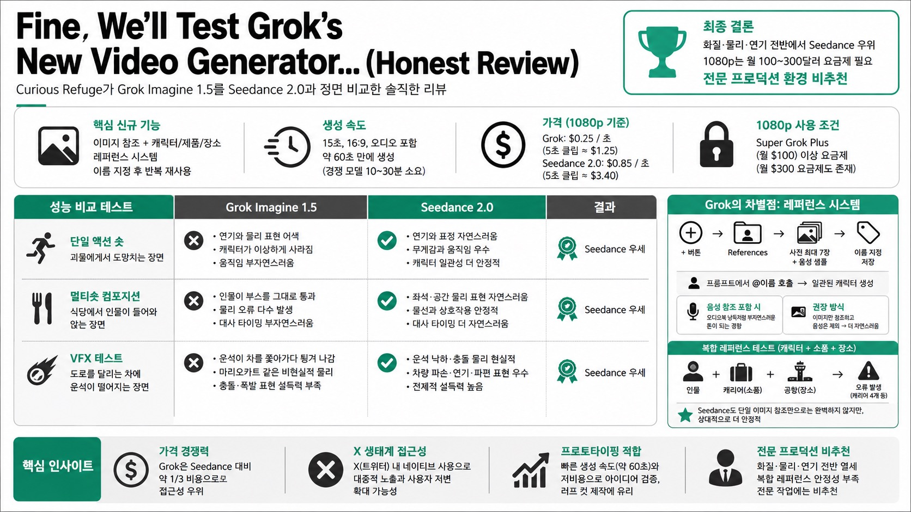

Curious RefugeMORNING DIGEST · 2026-08-07 · Curious Refuge🎬 영상
Fine, We'll Test Grok's New Video Generator... (Honest Review)
AI 영화 제작 커뮤니티 Curious Refuge가 xAI의 신규 AI 영상 생성 모델 'Grok Imagine 1.5'를 Seedance 2.0과 정면 비교한 솔직한 리뷰 영상. 캐릭터·소품·장소를 사전 학습시켜 반복 재사용할 수 있는 레퍼런스 기능은 흥미롭지만, 실제 화질·물리 표현·연기 퀄리티에서는 Seedance에 지속적으로 밀렸고, 1080p 해상도를 쓰려면 월 100~300달러 요금제가 필요해 가성비도 애매하다는 결론을 내린다.

01핵심 개요
항목
내용
채널/영상
Curious Refuge, "Fine, We'll Test Grok's New Video Generator... (Honest Review)"
리뷰 대상
xAI의 AI 영상 생성 모델 Grok Imagine 1.5
비교 대상
Seedance 2.0 (동일 프롬프트·레퍼런스로 병행 테스트)
핵심 신규 기능
이미지 참조 생성 + 캐릭터/제품/장소를 이름 붙여 반복 재사용하는 레퍼런스 시스템
가격
1080p 기준 초당 약 25센트(5초 클립 약 1.25달러) — Seedance 2.0(5초 약 3.4달러) 대비 약 1/3
결론
화질·물리·연기 전반에서 Seedance에 열세, 1080p는 월 100~300달러 요금제 필요, 전문 프로덕션 환경 비추천
02핵심 기능 / 내용 구조
이미지 참조 기반 생성: grok.com에서 참조 이미지를 업로드하고 프롬프트를 입력해 영상을 생성. "첫 프레임으로 사용" 또는 "스타일 참조로만 사용" 중 선택 가능. 15초 분량, 16:9, 오디오 포함 생성 시 약 60초 만에 결과물이 나올 정도로 생성 속도가 빠름(경쟁 모델 대비 10~30분 걸리는 경우가 흔함).
단일 액션 숏 테스트: 캐릭터가 괴물에게서 도망치는 장면에서 Grok은 연기와 물리 표현이 부자연스럽고 캐릭터가 이상하게 사라지는 등 어색함이 두드러진 반면, Seedance는 무게감과 움직임이 훨씬 자연스러웠음.
멀티숏 컴포지션 테스트: 식당에서 인물이 들어와 앉는 장면에서 Grok은 인물이 부스를 그대로 통과해 걷는 등 물리 오류가 발생했고, 대사 타이밍도 부자연스러웠음. 동일 조건에서 Seedance가 더 우수한 결과를 보임.
VFX(시각효과) 테스트: 도로를 달리는 차에 운석이 떨어지는 장면에서 Grok의 운석은 마리오카트 아이템처럼 차를 쫓아가다가 뒤로 튕겨 나가는 등 비현실적인 결과를 보인 반면, Seedance는 훨씬 설득력 있는 물리 표현을 보임.
캐릭터/제품/장소 레퍼런스 시스템(Grok의 차별점): + 버튼 → References 메뉴에서 사진 최대 7장과 음성 샘플을 업로드해 캐릭터·제품·장소를 이름 붙여 저장. 이후 프롬프트에서 @ 기호로 호출해 일관된 캐릭터를 반복 생성 가능. 음성 참조를 포함하면 오디오북 낭독처럼 부자연스러운 톤이 되는 경향이 있어, 이미지만 참조하고 음성은 빼는 편이 더 자연스러운 결과를 냄.
복합 레퍼런스 테스트(캐릭터+소품+장소 결합): 인물, 캐리어(소품), 공항 배경(장소) 레퍼런스를 동시에 결합한 생성에서 캐리어가 4개로 늘어나는 등 여전히 오류가 발생했으며, Seedance도 단일 이미지 참조만으로는 완벽하지 않았으나 상대적으로 안정적이었음.
03기술적 맥락
Grok Imagine 1.5는 이미지-투-비디오 전용에서 벗어나 오디오·이미지·영상을 결합하는 최근 AI 영상 모델 트렌드(Seedance, Miniaax 등과 동일 방향)를 따라가면서도, 캐릭터·소품·장소를 사전 학습(reference training)시켜 재사용하는 방식으로 차별화를 시도.
이는 기존에 Magnific, Seedance의 캐릭터 시트/레퍼런스 이미지 단발성 활용이나 LoRA 학습으로 해결하던 "동일 캐릭터 반복 생성" 문제를 UI 차원에서 네이티브 지원하려는 접근.
현재(리뷰 시점) 미국 지역 전용 서비스이며 점진적으로 확대 예정. 1080p 해상도는 Super Grok Plus(월 100달러) 이상 요금제에서만 사용 가능하고, 월 300달러 요금제도 존재.
04전략적 의미
Grok은 화질·물리·연기 품질에서 Seedance에 뒤처지지만, 가격이 약 1/3 수준이고 X(트위터) 생태계 내 접근성이 높아 "품질보다 접근성"으로 사용자 저변을 넓힐 가능성. 다수의 일반 사용자가 X나 ChatGPT, Claude를 통해 AI에 대한 인상을 형성하고 Seedance·Cling·Miniaax 같은 전문 도구를 접하지 않는 경향이 있어, 대중적 노출 측면에서 Grok의 존재감은 무시할 수 없음.
다만 전문 프로덕션·클라이언트 작업 관점에서는 비추천. 리뷰어는 "전문적으로 작업한다면 일론에게 돈을 더 주지 않는 게 낫다"는 표현으로 결론을 요약.
캐릭터/제품/장소를 미리 정의하고 반복 재사용하는 방향성 자체는 업계 전반이 향하는 흐름(LoRA 학습 대체재)으로, 실행력만 개선되면 프로덕션 워크플로우에 실질적 영향을 줄 잠재력이 있다고 평가.
05핵심 워크플로우 · 방법론
grok.com 접속 → 하단 입력창 좌측 + 버튼으로 참조 이미지 업로드(Upload media).
참조 이미지 사용 방식 선택: First frame(첫 프레임 고정) vs Reference(스타일만 참조, 기본 권장).
프롬프트 작성 → 해상도(최대 1080p, 요금제 제한 있음) · 길이(예: 15초) · 화면비(16:9) · 오디오 여부 설정 → Generate 클릭.
캐릭터/소품/장소 반복 재사용이 필요하면 + → References → New → 이름 지정 → 사진 최대 7장 업로드 → (선택) Curated voices에서 음성 선택 → 카테고리(character/location/prop) 지정 → Create.
이후 프롬프트에서 @캐릭터명 형태로 호출하면 저장된 레퍼런스가 자동 반영됨. 여러 레퍼런스(캐릭터+소품+장소)를 동시에 결합 호출 가능.
비교 검증 방법론으로 동일 프롬프트·동일 참조 조건을 Seedance 2.0에 그대로 적용해 화질·물리·연기·가격을 나란히 비교.
06활용 시나리오
저예산·개인 크리에이터의 빠른 프로토타이핑: 생성 속도가 빠르고(약 60초) 비용이 Seedance 대비 약 1/3이라 아이디어 검증용 러프 컷 제작에 적합.
X(트위터) 생태계 콘텐츠 제작자: 별도 도구 학습 없이 이미 사용 중인 플랫폼 내에서 캐릭터 일관성을 유지한 숏폼 영상을 만들고 싶은 경우.
캐릭터/제품 브랜드 일관성이 필요한 마케팅 실험: LoRA 학습 없이 사진 몇 장과 음성 샘플만으로 반복 재사용 가능한 캐릭터를 만들고 싶은 소규모 팀의 초기 테스트.
AI 영상 모델 벤치마킹: 여러 모델의 동일 프롬프트 결과를 비교해 프로젝트에 맞는 도구를 선정하려는 프로덕션 매니저나 리서처.
07현황 및 전망
현재는 미국 지역 한정 서비스로 글로벌 확대는 진행 중. 1080p 등 고급 기능은 고가 요금제(월 100~300달러)에 묶여 있어 초기 진입 장벽이 있음.
리뷰 시점 기준으로는 Seedance 2.0 대비 화질·물리·연기 전반에서 명확한 열세이며, 특히 멀티캐릭터·복합 레퍼런스 조합 시 소품 개수 오류 등 안정성 문제가 남아 있음.
다만 저비용·고속 생성과 네이티브 레퍼런스 시스템이라는 방향성은 유효해, 후속 버전에서 품질이 개선되면 X 생태계를 기반으로 한 대중적 채택이 빠르게 확산될 가능성이 있음. Curious Refuge는 시청자 의견을 요청하며 지속 관찰할 주제로 남겨둠.